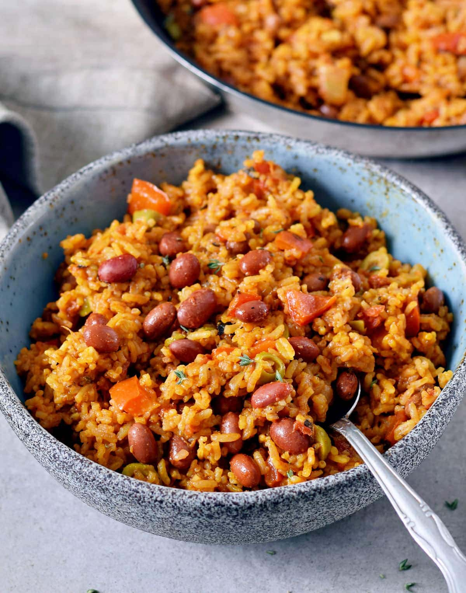
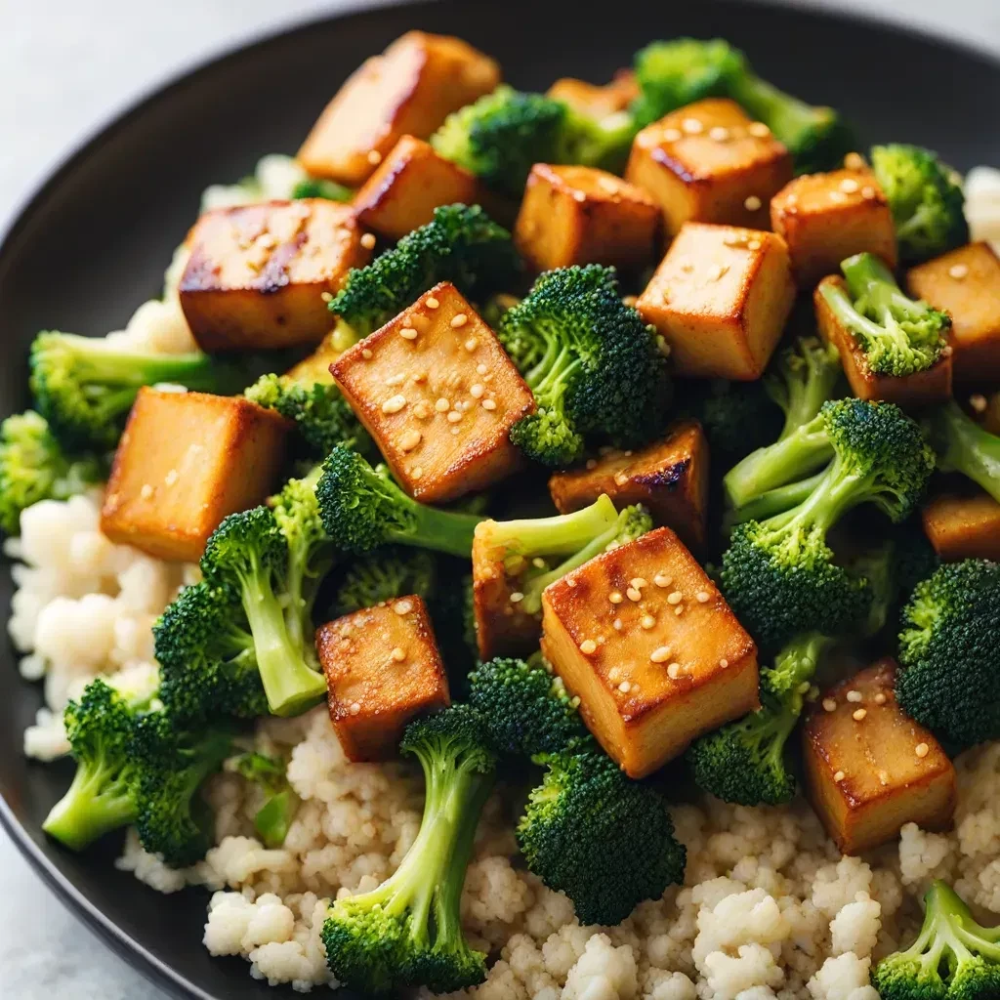
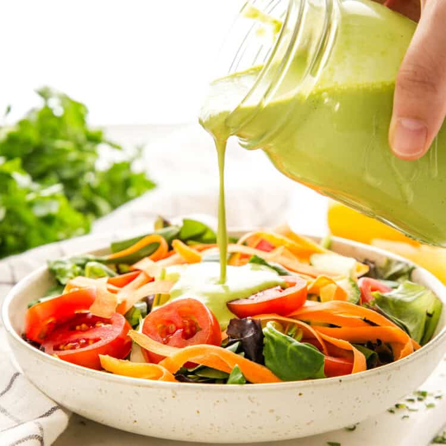

A Note from Our Registered Dietitian
I am a registered dietitian in Calgary. Having been born and raised in Singapore, a multicultural nation, I have had the unique opportunity to be surrounded by different ethnic groups. After completion of my dietetics nutrition degree in Montreal, I worked as a diabetes educator in the capital city of Canada for several years before heading west to Calgary.
I believe that having well-balanced nutrition isn't just about getting nourishment from the food we eat, but also encompasses our social connection to cultural traditions and personal pleasures.
In these blog posts, I look forward to sharing ways to power-up your liver health and begin on a journey towards a healthier life.
Why is eating well important when you have liver disease?
Your liver is essential for proper nutrition and health and acts like your body's power station. It helps with digestion, storage, and supplying nutrients such as sugar, fat, protein, vitamins, and minerals. The liver does hundreds of different jobs in the body day in and day out.
Enjoy a healthy balanced plate for each of your three meals.
Use The Balanced Food Plate to follow healthy food portions and choices. Try to fill 50% of your plate with vegetables and fruits, 25% with whole grains or starchy vegetables and 25% with protein-rich foods.
Drink water throughout the day.
Limit sugar, fat, unhealthy calories and salt.

What is the Mediterranean Style of Eating?
The Mediterranean diet is a style of eating that includes foods often eaten in the countries around the Mediterranean Sea. Some of these countries are Spain, Italy, Greece, Turkey, Israel, Egypt, and Morocco. The Mediterranean diet is not one single diet but varies by culture and region, maintaining a common theme of:
High Consumption
- Vegetables & fruits
- Cereals & legumes
- Nuts
- Unsaturated fats (e.g. olive oil)
Moderate Consumption
- Fish & seafood
- Poultry & eggs
- Dairy products
Reduced Consumption
- Red & processed meat
- Butter
- Added sugar
Is Mediterranean Style of Eating Good for My Liver Health?
Following a Mediterranean style of eating may help some people with fatty liver disease. That's because this style of eating helps control our appetite and reduce portion sizes. It is also higher in nutrients like fibre, healthy fats, vitamins, minerals, and antioxidants while lower in unhealthy fats, red and processed meats, refined grains, and sugar.
Do you eat in the Mediterranean style?
Check Yes or No for each item below. Each Yes is a Mediterranean style eating habit you already have. If you're ready to make changes, use the tips below to increase your Yes answers.
I eat 5 or more vegetables every day.
I eat 3 or more fruits throughout the day.
I eat whole grains (whole grain or whole wheat bread, cereal, pasta, or rice) every day.
I use olive oil for cooking and at the table.
I eat nuts, seeds, or avocado at least 3 times a week.
I eat beans, peas, or lentils at least 3 times a week.
I eat fish at least 3 times a week.
I enjoy at least one meal a day with friends or family.

Eating More Plants May Improve Your Liver Health
Many people know that fibre plays a role in regulating bowel movements, but new research shows that eating fibre may benefit more than our digestive health, it may also help protect our liver.
As fatty liver disease, especially metabolic dysfunction–associated steatotic liver disease (MASLD) has become a major health concern worldwide, researchers are paying closer attention to the role of fibre and the benefit of eating more legumes, beans, peas, nuts, seeds, whole grains, colorful vegetables and fruits.
What is fibre?
Fibre is the part of plant foods that our bodies cannot break down and absorb. There are many different types of fibre, the most common are soluble and insoluble. All foods that contain fibre have more than one type.
Soluble fibre dissolves in liquid, turning into a thick gel. It can help lower our blood cholesterol and control blood sugar.
Insoluble fibre does not dissolve in water. It helps maintain a healthy digestive system, regulates bowel movements and may lower our risk of getting heart disease and certain types of cancer.
Why are researchers interested in fibre?
Steadily over the years, researchers have concluded that fibre helps support weight management and improve blood sugar control. New research suggests fibre may also help the liver through our gut. Our gut and liver are closely connected through something called the "gut-liver axis."
Our digestive system has about 38 trillion microorganisms. These bacteria help break down certain types of fibre that our bodies cannot break down and absorb. When gut bacteria in the large intestines ferment fibre, they produce helpful substances that may help reduce inflammation in the body, enhance insulin sensitivity, and support liver health.
Not all fibres are created equal
The latest research indicates different types of fibre may have different effects on our bodies. To help build a diverse and balanced gut microbiota, it is important to eat a wide range of plant foods rather than focusing on a single type of fibre. Prioritize eating more fibre-rich whole plant foods such as whole grains, vegetables, fruits and beans, over relying solely on processed fiber supplements. Think about food first!
Tips to help you eat more fibre for liver health
Rather than focus on how many grams of fibre eaten, you can increase your fibre consumption by exploring different shapes and colours of plant foods throughout the week. The cumulative effect of small steps can add up over time. This week, set a goal to eat three different colours and four different shapes of plant foods. Variety matters!
Here are a few ideas to increase your fibre intake:
- Start your day with cold or hot cereals, and add ground flaxseeds, chia seeds and nuts. Make a fruit salad.
- Add black, navy, or kidney beans, chickpeas, or lentils to salads, soups, stew, and meatloaf.
- Snack on edamame, fruits and vegetables.
- Choose whole grain breads and pasta, quinoa, barley and brown rice.
- Eat the skins or peels of vegetables and fruits when possible.
LHC Nutrition Blog — Mediterranean vs. Anti-Inflammatory: Which is Better for Fatty Liver?
Metabolic dysfunction–associated steatotic liver disease (MASLD) and formerly known as Non-alcoholic fatty liver disease (NAFLD) is closely connected to insulin resistance, chronic low-grade inflammation and modern dietary pattern.
If you have been informed by your physician you have fatty liver disease, you have probably heard of this, nutrition alongside healthy lifestyle is one of the most effective ways to reverse or manage metabolic dysfunction–associated steatotic liver disease.
Have you ever wondered what the difference is between Mediterranean style of eating and Anti-Inflammatory Diet? These are the top 2 patterns of eating for individuals with fatty liver disease – they are more alike than different because they focus on:
Below you will find a summary of these patterns of eating.
| Mediterranean Style of Eating | Anti-inflammatory Diet | |
|---|---|---|
| Characteristic | Mediterranean region-specific traditional eating pattern | Not specified to one region or cuisine |
| Cultural Adaptation | Could feel "foreign" if you are not from the Mediterranean; olive and seafood may not fit your norms | Flexible, globally adaptable to any cuisine and preserves cultural identity |
| Highlight Features | Foods and lifestyle => Olive oil, fish, vegetables, nuts and whole grains alongside social eating and physical activity | Biological effect (reducing inflammation) => polyphenols, omega-3, fiber, unprocessed foods, low sugar and whole grains |
| Why It Helps | Improve insulin sensitivity Reduce liver fat accumulation Support heart health |
Stabilize blood sugar Support gut and metabolic health |
When nutrition messages meet culture with simple makeover!
Traditional South Asian Foods
| Instead of | Try this | |
|---|---|---|
| White rice | ⇒ | Brown rice |
| White flour naan or roti | ⇒ | Whole wheat naan or roti |
| Butter or ghee | ⇒ | Mustard/sesame seed/ peanut/ canola/ olive oil |
| Paneer | ⇒ | Tofu, chickpeas (chole), lentils (dal), red kidney beans (rajma) |
| Deep-fried potatoes | ⇒ | okra (ladyfingers), eggplants |
Recipes of the Season
Vietnamese Fresh Salad Rolls (Gỏi Cuốn)
As the summer months are upon us, I would like to entice you with this healthy, refreshing and nutrient-packed meal, Vietnamese fresh salad rolls (Gỏi Cuốn).
View Full Recipe with Peanut Sauce (PDF) →Whole Wheat Chapati with Red Lentils Dal (Masoor Dal)
Ingredients
- ½ cup red lentils (masoor dal), wash and rinse
- ¼ cup yellow lentils (moong dal), wash and rinse
- 3 to 4 medium tomatoes, cut into chunks
- 1½ cup of water
- 1 to 1½ tablespoon canola or mustard oil
- ¼ head garlic, peeled and minced
- 1 medium red or yellow onion, cut into eighths
- ½ teaspoon Kashmiri red chili powder
- ½ teaspoon cumin seeds
- ½ teaspoon dried fenugreek leaves (kasuri methi)
- ¼ teaspoon salt
- 1/8 teaspoon garam masala
Directions
- Add red lentils, yellow lentils, chopped tomatoes and water to a medium saucepan. Mix well. Turn high heat, bring to a boil. Cover with lid and reduce heat to low setting and cook until soft, adding more hot water, if needed. Remove from heat, set aside.
- In a medium frying pan, add oil. Turn medium heat. Once oil is heated, add garlic, onion, red chili powder, cumin seeds, salt and garam masala, stir fry for 4 to 5 minutes. Pour into lentils mixture. Add dried fenugreek leaves. Mix well and simmer for 2 to 3 minutes. Remove from heat.
- Serve Red Lentils Dal (Masoor Dal) warm with whole wheat chapati or roti.
Spanish Rice and Beans
As the winter months are upon us, I would like to entice you with this healthy, well-balanced, easy to prepare one-dish meal.
View Full Recipe (PDF) →
Credit: ElaveganSimple One-Dish Vegetables, Tofu and Brown Rice Stir-fry
Makes 4 servings
Ingredients
- 1 cup of brown rice
- 2 cups of no salt vegetable broth
- 2 tablespoons vegetable oil, canola or olive
- 1 head of garlic, peeled and chopped thinly
- 1 medium red or yellow onion, cut into eighths
- 4 medium carrots, peeled and cut lengthwise
- 1 cup cauliflower, sliced 1 inch (2.5 cm)
- 1 cup broccoli, sliced 1 inch (2.5 cm)
- 1 package (350g) extra firm tofu, cut into ½ inch
Directions
- Prepare a day before. Mix rice and vegetable broth in a medium pot. Turn high heat, bring to a boil. Cover with lid and reduce heat to low setting. Cook for 50 minutes. Remove from heat, set aside. After cooling, to frige overnight.
- In a large frying pan, add vegetable oil. Turn medium heat. Once oil is heated, add garlic and onion, stir fry for 3 to 4 minutes. Add carrots, cauliflower, broccoli and tofu, and stir-fry for 8 to 10 minutes, until vegetables become tender.
- Stir in the overnight rice and cook for another 5 to 6 minutes.
- Serve warm.

Credit: MealPractice
Credit: The Busy BakerBasil and Lemon Dressing
Makes 75ml or 1/3 cup
A nicely prepared salad with an easy dressing can be a well-balanced meal. By making your own dressing, you can control the amount of fat and salt that you add, as well as the quality of ingredients.
Ingredients
- 1 tablespoon fresh basil leaves, chopped
- 2 tablespoons garlic cloves, minced
- 2 tablespoons fresh lemon juice
- ½ teaspoon lemon peel, grated
- 1 tablespoon canola oil
- 2 tablespoons red wine (or white) vinegar
- ½ teaspoon freshly ground black pepper
Directions
- Combine all ingredients in a small bowl and pour over salad.
- Mix well. Serve at room temperature.
Holiday Eating Tips for a Healthy Liver!
It's almost that time of the year again! We know it is a holiday season, but your liver doesn't — disrupted schedules, less regular exercise, and increased stress levels can lead to mindless eating and poor food choices. The key is finding a balance that works best for you. It is never too late to start making action plans to stay on track with your health goals through the season.


⚖️ Follow the 80/20 rule
Aim to make sure 80 percent of your meals align with your regular health routine and goals. I enjoy a small portion of my favorite treats and fill the other 80 percent of my plate with nutritious foods.
📋 Plan ahead
Eating a light snack of foods high in fiber and protein such as nut or seed butter on whole grain crackers or yogurt, before a holiday party that I know may have lots of high-calorie treats can help curb my appetite so that I avoid overeating.
🏃 Stay active
Keep moving, any exercise that you enjoy. Be it a walk, a swim or a dance. Consider how exercise will help you feel better and more refreshed.
🍽️ Practice portion control
Include a variety of colorful veggies and lean protein such as chicken, fish, and legumes on your plate, then opt for smaller portions of high-calorie foods and sweet treats. Slow down and savor each bite, stop eating when you feel satisfied rather than overly full.
💧 Stay hydrated
Drinking adequate and regular water throughout the day can help you feel fuller and avoid overeating. Limit consumption of alcohol and high calorie beverages such as eggnog, regular pops, and iced tea. Healthier alternatives include infused water, tea, herbal tea, black coffee, low fat milk, unsweetened plant-based beverage or club soda.
😴 Beyond food
In addition to eating healthily, being physically active, having good sleep and stress management are also important.
For more information to learn how to manage your chronic condition or disease with our free programs and services to Albertans. Please visit the website Alberta Healthy Living Program | Alberta Health Services
Have a question for our Dietitian?
Use the anonymous form below! Once it is answered, we will add the question and answer to our FAQs for you and other people to see.